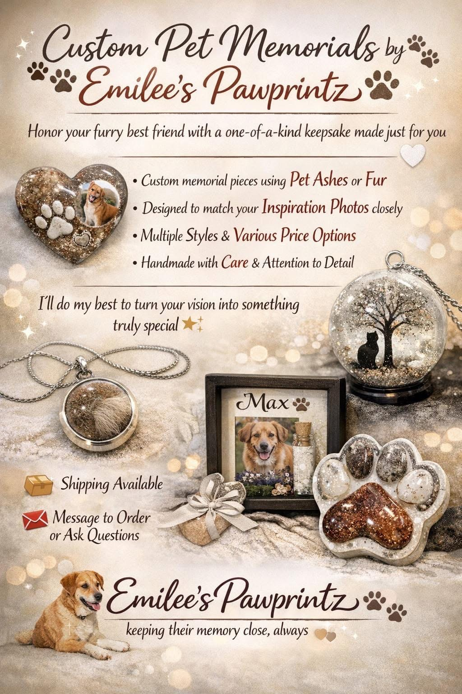

Handmade keepsakes using your pet’s ashes or fur
Handmade keepsakes using your pet’s ashes or fur

Emilee’s Pawprintz creates custom pet memorial keepsakes for families who want something truly personal and meaningful. Each piece is handcrafted with compassion and care, helping you keep your beloved pet’s memory close—always.
Based in Massachusetts and available by email, every memorial is thoughtfully designed to reflect your inspiration, your pet, and your story.
Send a message to start your custom memorial
I’ll work with you to create something truly meaningful for your pet ❤️
Start Your MemorialI’ll respond within 24 hours to get started
Photos of recent custom pieces will be added soon.
Each memorial is handmade to reflect your pet, your inspiration, and your story.
emileespawprintz@gmail.com